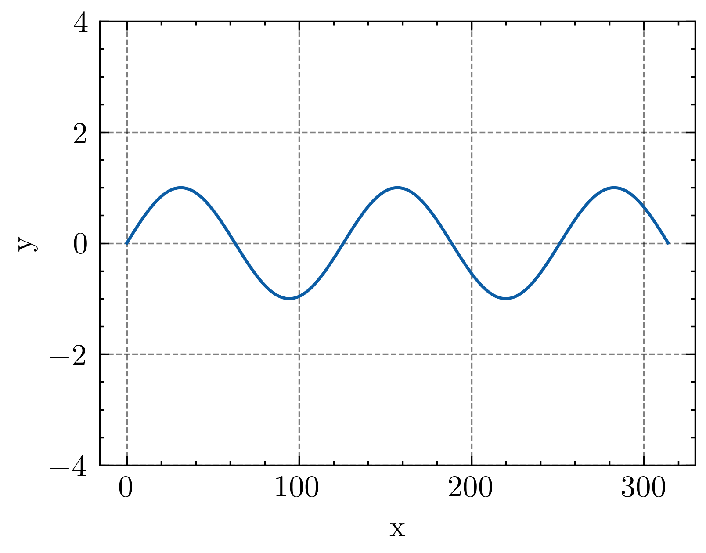

波动方程求解
大量参考《数学物理方法》-杨孔庆
弦振动推导波动方程
高中竞赛物理常见近似，x趋近于0时，如下（画个三角形显而易见）：
\[cos x = 1 \]
\[ sin x = tan x \times cos x = tanx = x(弧度制)\]
初始设定
弦：线密度 \(\rho\)，每一点上下震动（x方向唯一为0） 
受力分析
x处，dx长的的一段绳子（线密度\(\rho\)）:
受到三个可能的力，两端的拉力\(T_x\)和\(T_{x+dx}\)，与绳子相切，切角大小分别为\(\alpha\)和\(\beta\)，并且单位长度弦可能受到外力，暂时认为是竖直方向，\(f_0(x,t)\)

由于x轴上没有运动，x方向受力平衡
\[T_xcos\alpha - T_{x+dx} cos\beta = 0\]
弦的振幅很小，可取\(\alpha\)\(\beta\) -> 0，由上面的近似可得
\[T_x = T_{x+dx} = T\]
竖直方向上，运动方程为
\[Tsin\alpha-T_{x+dx}sin\beta+f_0(x,t)dx=ma=(\rho dx) u_{tt}\]
其中\(u_{tt}\)为竖直方向位移对时间的二阶导数
由最开始的近似关系，可进一步化简为：
\[ Ttan\alpha-Ttan\beta+f_0(x,t)dx=(\rho dx) u_{tt} \]
\(tan\)函数可以看做斜率：
\[Ttan\alpha-Ttan\beta=T(\frac{\partial u}{\partial x}\bigg|_{x+dx}-\frac{\partial u}{\partial x}\bigg|_x)\]
其中
\[\frac{\partial u}{\partial x}\bigg|_{x+dx} - \frac{\partial u}{\partial x}\bigg|_x=\frac{\partial^2 u}{\partial^2 x}dx\] 可得
\[T\frac{\partial^2 u}{\partial^2 x}+f_0(x,t)=\rho u_{tt}\]
写成标准形式：
\[u_{tt}-au_{xx}=f(x,t)\]
其中 \(a=\frac{T}{\rho}\)，即振动在弦上传播的速度，\(f(x,t)=\frac{f_0(x,t)}{\rho}\)被称为外力密度，单位长度密度上所施加的外力。当\(f(x,t)=0\)，方程变为
\[u_{tt}-a^2u_{xx}=0 (0<x<l,t >0)\]
即为一次齐次波动方程
定解条件
“初始条件”与“边界条件”
初始条件
位移分布和速度分布已知，\(\psi(x)\)和\(v(x)\)为已知函数
\[u(x,0)=\psi(x) \qquad 0 \leq x \leq l\]
\[u_t(x,0)=v(x) \qquad 0 \leq x \leq l\]
边界条件
共三类，分别是：
- 绳子两端固定
- 绳子两端不收到任何力，自由端
- 绳子两端是弹簧
固定边界（两端）
好比最上面的那个图，两端始终在x轴上的某一点即
\[u(0,t)=u(l,t)=0\]
随着时间t的变化，x=0和x=l处的绳子两端坐标u不变
自由边界（两端）
在我们之前的方程推导中，默认的是，\(x\)处的绳子长度\(dx\)，受到绳子两端的其他绳子拉力为
\[T_x、T_{x+dx}\]
\(y\)轴方向的受力，x轴方向一律认为不动 \[T_xsin\alpha、T_{x+dx}\beta\]
近似以后为
\[T_xsin\alpha = Ttan\alpha = T\frac{\partial u}{\partial x}\bigg|_x\]
\[T_{x+dx}sin\beta = Ttan\beta = T\frac{\partial u}{\partial x}\bigg|_{x+dx}\]
而真实情况是，\(x=0\)和\(x=l\)处，绳子自由时，这两段绳子只能受到一端绳子的力，另一端外力为0，即
\[T\frac{\partial u}{\partial x}\bigg|_0=0\]
\[T\frac{\partial u}{\partial x}\bigg|_l=0\]
其中T可以去掉（绳子两端一个外力左下，一个右上，方向不同，但是此处为0，不考虑正负号）
\[\frac{\partial u}{\partial x}\bigg|_0=0\]
\[\frac{\partial u}{\partial x}\bigg|_l=0\]
弹性边界（两端）
绳子在两个竖直的弹簧上系着，在这种情况下，2中的竖直方向外力不为0，认为是一种弹力，类似于弹簧\(f=au\)，其中a为弹簧系数，u为y轴竖直方向位移，平衡时，两端受力为（暂时认为向上的力为负）：
\[-\frac{\partial u}{\partial x}\bigg|_0 + a_1u(0,t) = 0\]
\[\frac{\partial u}{\partial x}\bigg|_l + a_2u(l,t) =0\]
两边弹簧弹性系数不一样，分别为\(a_1\)，\(a_2\)。
本文作者：yuhldr
本文地址： https://yuhldr.github.io/posts/58883.html
版权声明：转载请注明出处！